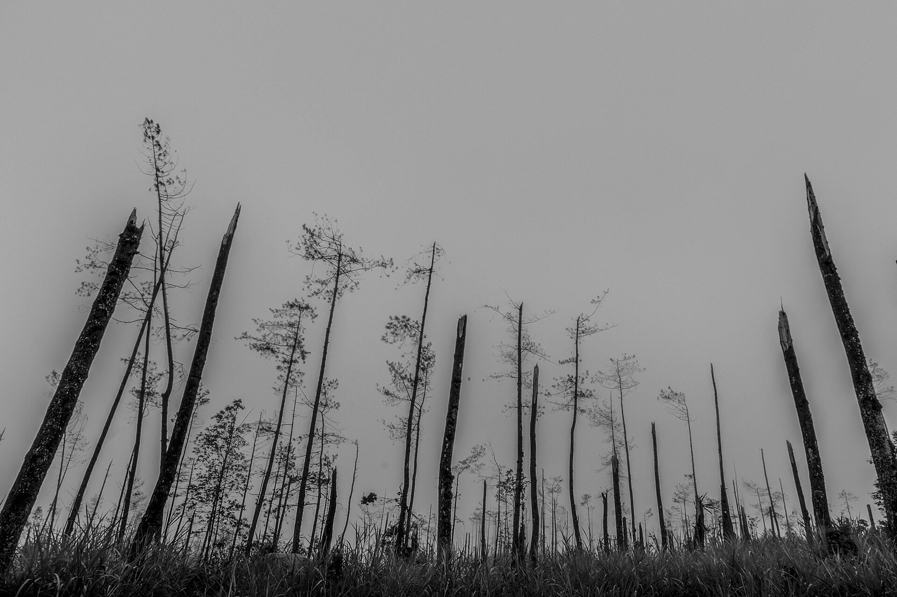
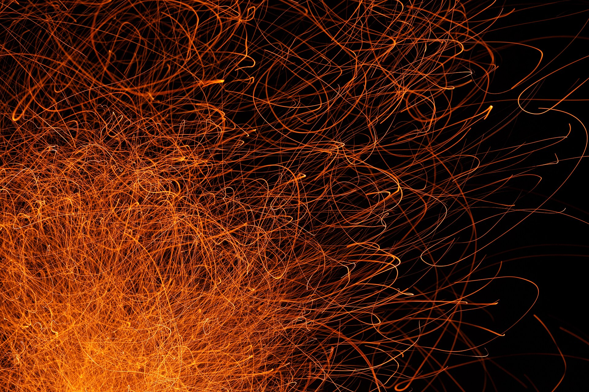
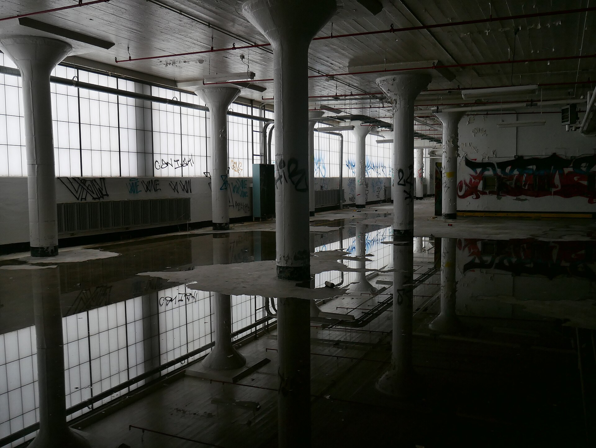
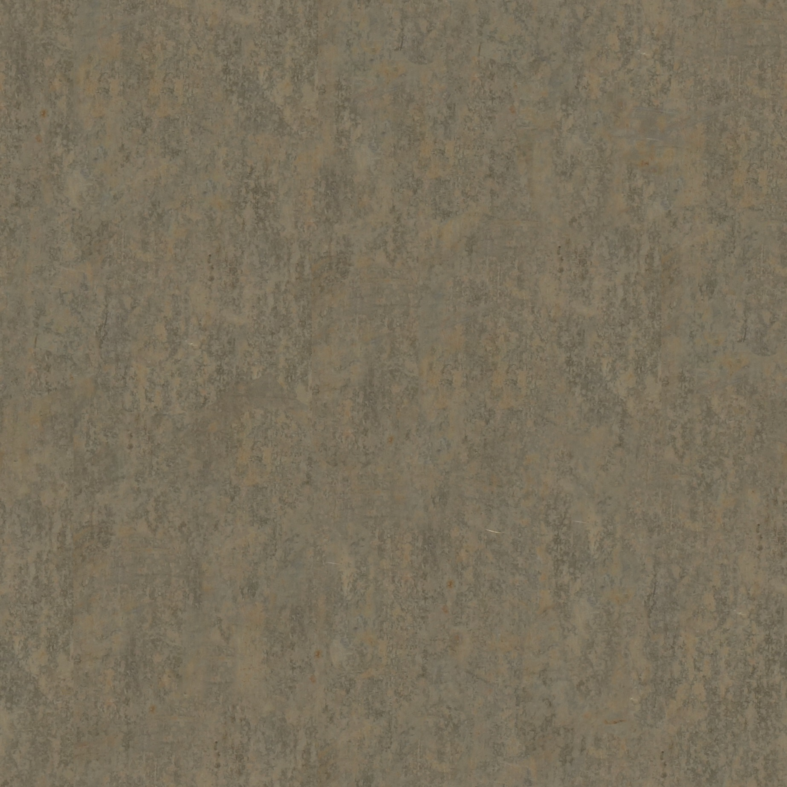

Хардкорный Rust-сервер с честными рейдами и вайпом каждые две недели.
Скачать лаунчерMAD RUST
Мир после вайпа
Статус MAD RUST: сервер работает
Здесь нет очередей, платных преимуществ и равнодушной администрации. Только ресурсы, рейды и люди, с которыми ты делишь карту.
MAD RUST — флагманский проект MAD PROJECT. Мы играем на своём сервере, читаем каждое обращение и обновляем контент каждые две недели.

Что здесь иначе
Три вещи, которые решают, останешься ты на второй вайп или уйдёшь искать другой сервер.
Честная игра
- Без pay-to-win
- Каждый предмет добывается в игре
- Донат только косметика
- Ручная модерация
- Античит и проверки
Баланс не продаётся. Всё, что влияет на рейд, добывается на карте.
Живой мир
- Ивенты каждую неделю
- Арены и гонки
- Свои монументы
- Живая экономика
- Торговые хабы
Карта не стоит на месте: события, сделки и точки, за которые дерутся.
Стабильность
- Сервер без фризов
- Быстрые загрузки
- Проверка файлов
- Поддержка в Discord
- Обновления каждые две недели
Лаунчер сам проверяет файлы, а сервер держит темп в разгар рейда.

Всё обнуляется
Каждые две недели карта возвращается в исходное состояние. Базы, склады и союзы исчезают. Остаются навыки и те, с кем ты начнёшь заново.
Следующий вайп: 5 ноября · 18:00 МСК
Фото: saskialisette, CC BY-SA 4.0.

От файла до рейда
Лаунчер скачивает и проверяет файлы сам. Steam и лицензия Rust не нужны. Выбираешь папку, ждёшь проверку, нажимаешь «Играть».
Лаунчер
Скачать с сайта15 МБ
Запуститьбез установки
Установка
Выбрать папку1 клик
Скачать файлыавто
Проверить целостностьавто
Первый вход
Нажать «Играть»готово
Ты на сервере
Вайп начинается
до вайпа · 5 ноября · 18:00 МСК
Скачай лаунчер, установи игру одной кнопкой. Дальше только выживание.
Скачать лаунчерЧастые вопросы
Не нашёл ответ? В Discord отвечают быстрее всего.
Открыть DiscordКак начать играть на MAD RUST?
Скачай лаунчер, выбери папку для игры и нажми «Установить». Лаунчер скачает актуальные файлы, проверит их и запустит игру. Steam и лицензия Rust не нужны.
Нужны ли Steam и лицензия Rust?
Нет. Лаунчер скачивает и проверяет файлы сам, поэтому отдельная установка Rust через Steam не требуется.
Когда проходят вайпы?
Каждые две недели, по четвергам в 18:00 МСК. Точный таймер до следующего вайпа висит на этой странице и в лаунчере.
Есть ли донат и pay-to-win?
Pay-to-win нет. Донат даёт косметику и небольшие удобства, которые не влияют на баланс и исход рейдов. Всё оружие и ресурсы добываются в игре.
Что делать, если установка прервалась?
Открой лаунчер, нажми «Проверить файлы», а затем «Установить». Повреждённые и отсутствующие файлы докачаются автоматически. Заново качать всю игру не придётся.
Меня заблокировали, куда писать?
В Discord в канал поддержки. Приложи ник, время и, если есть, запись экрана. Админы разберут обращение вручную.